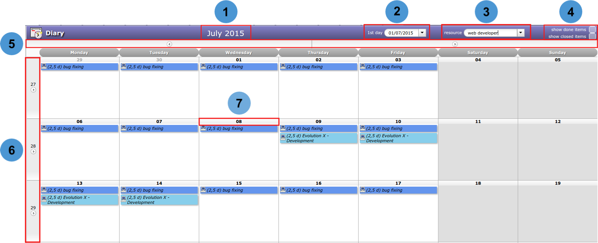

Diary¶
Allows to display planned task to a resource on a calendar view.
This view can be monthly, weekly or daily.
Just click on any task to access directly.
Note
On mouse over the task
- You can see a short information about the task.
Day colors
- Yellow day : Current day
- Grey days : Days off
Calendar selector¶

1 - Period
- Display the month, week, or day.
2 - 1st day
- Allows to select the displayed calendar.
- The first day of mouth or the week is displayed.
3 - Resource
- Allows to select the resource calendar.
4 - Show done items & Show closed items
- Allows to display or not the done and closed items.
5 - Top buttons
- Allows to change current month, week, or day.
6 - Left side buttons
- Click on to go to week display mode.
- Click on to return to the last display mode.
7 - Day number button
- Click on the day number button to go day display mode.